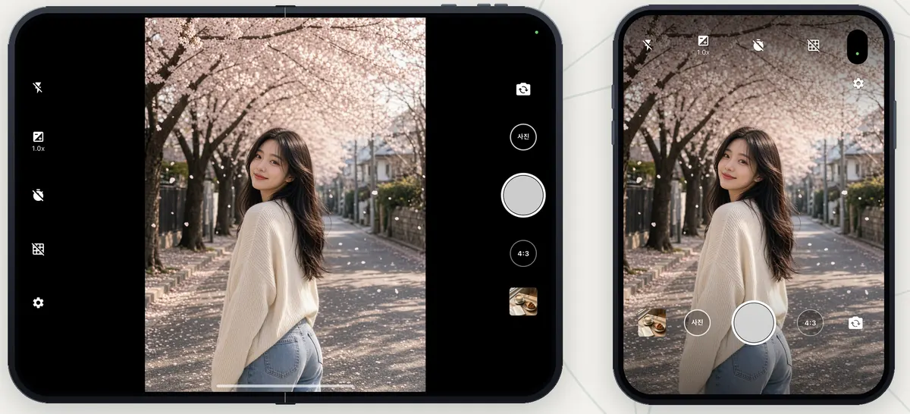
iPhone 듀오 완벽 지원Full iPhone Duo support
펼쳐도, 접어도 딱 맞게. 외부 · 내부 디스플레이 모두 지원해요.Folded or unfolded, the camera fits both the outer and inner displays.
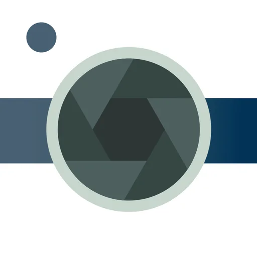
Silent Camera · 무음 필터 카메라Photo Filter & Timer Camera
셔터 소리 없이, 원본 화질 그대로.
필터와 간편 편집까지 한 번에.Every shot, beautifully filtered.
A hands-free timer, quick edits and 4K video in one simple app.
옆으로 넘겨 보세요 →Swipe to see more →
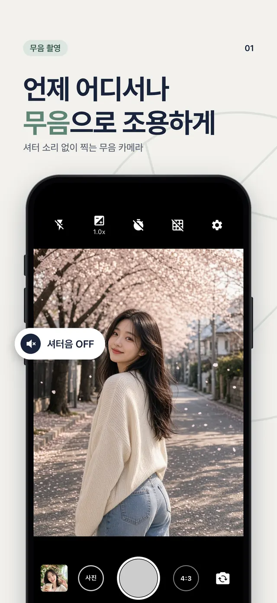
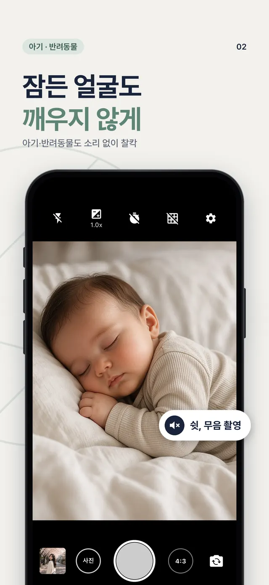
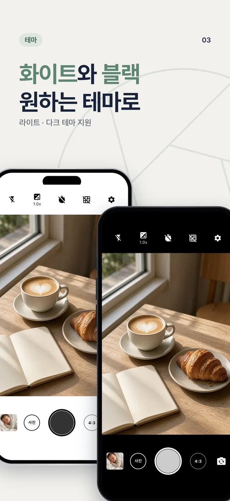
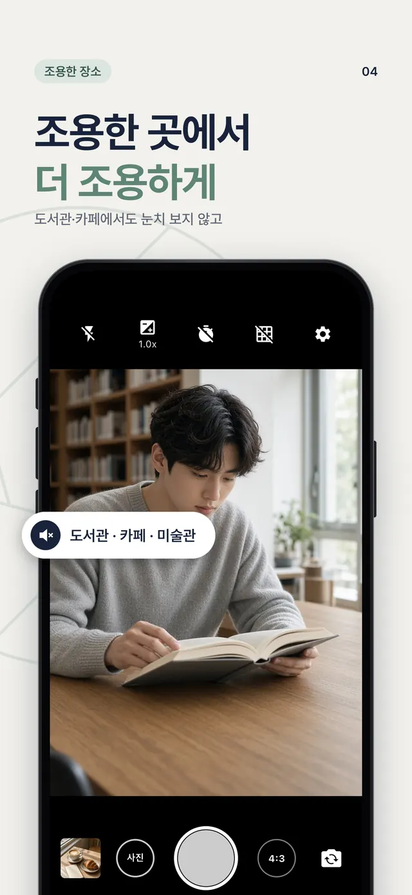
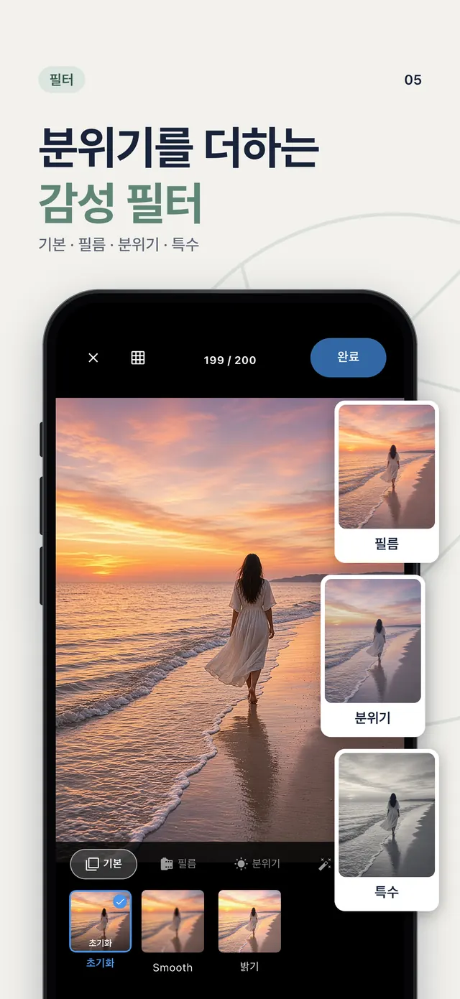
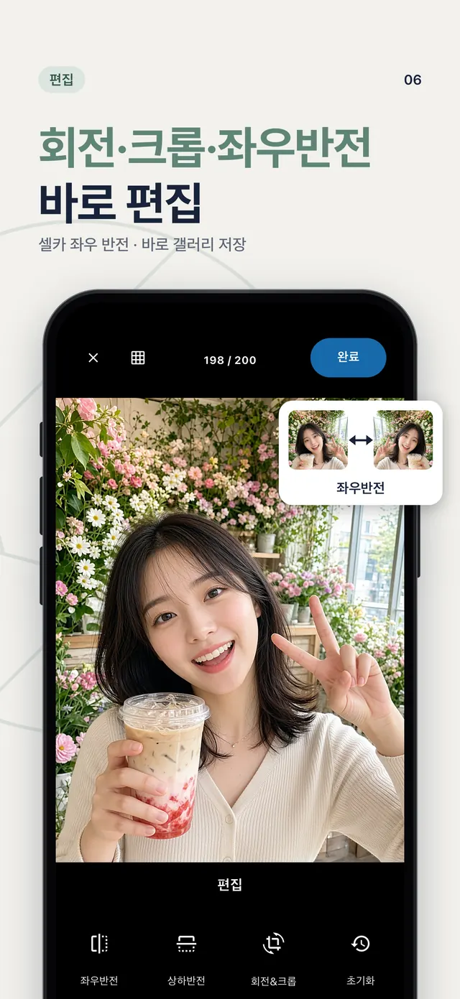
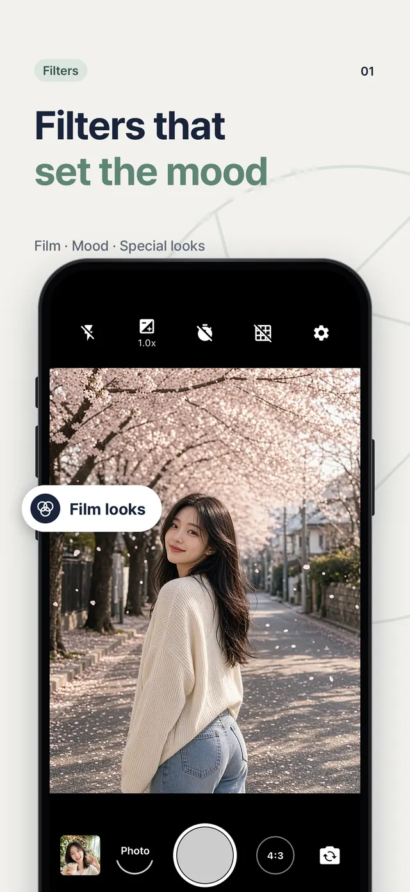
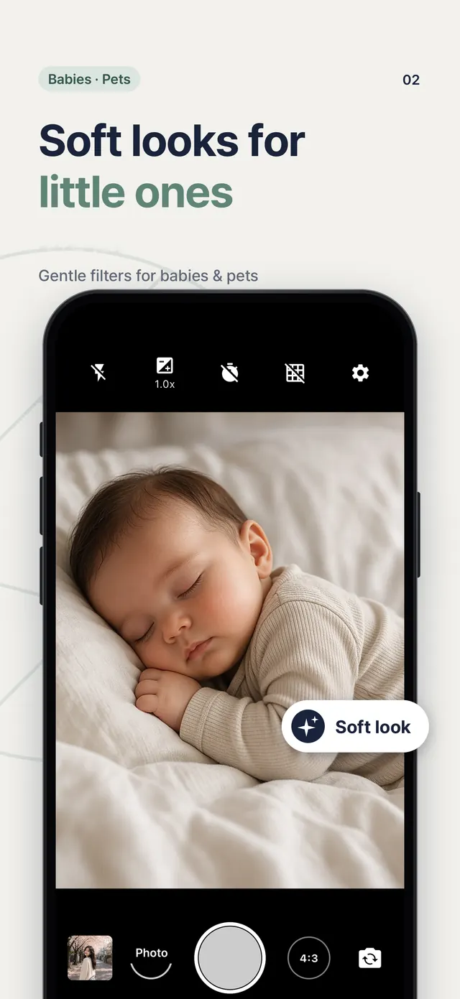
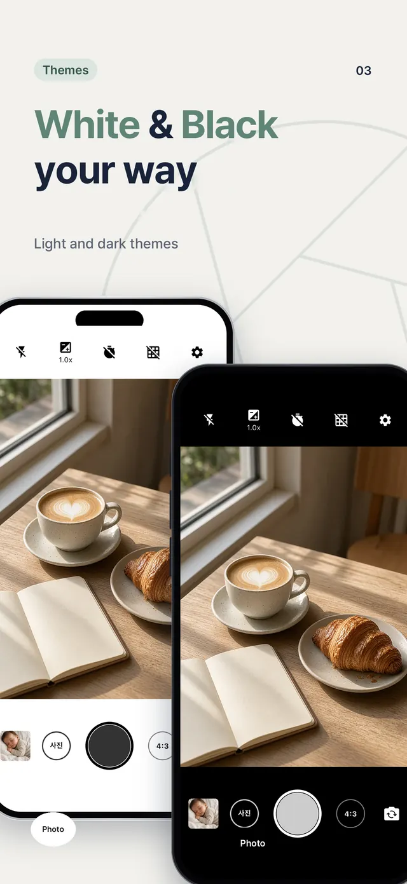
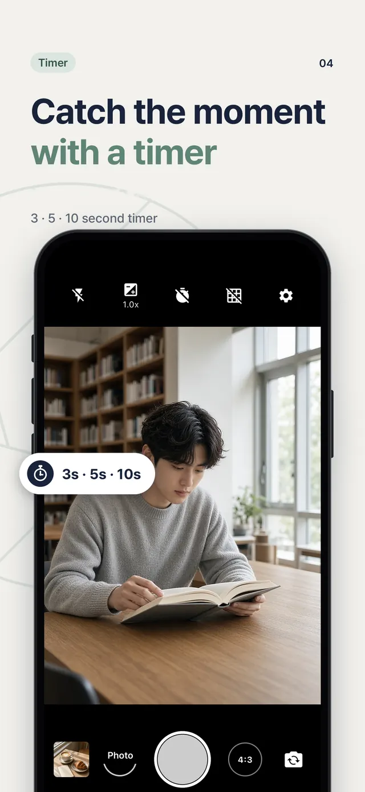
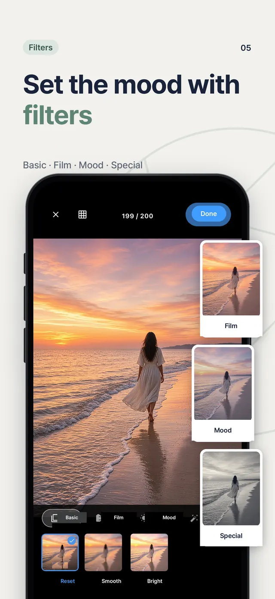
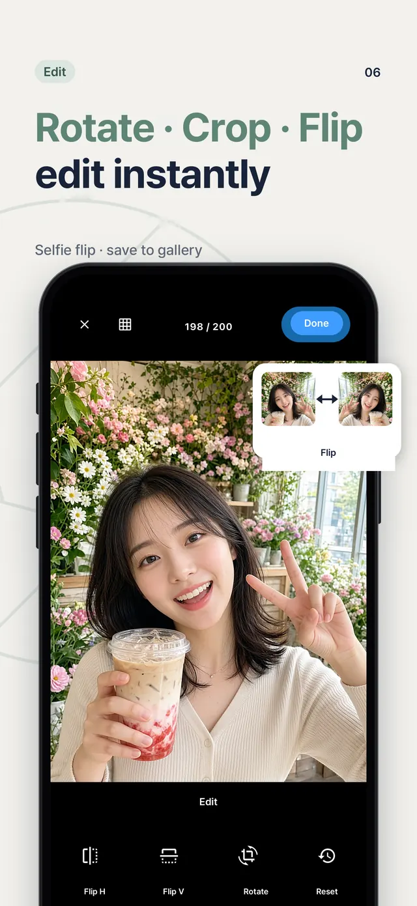
셔터 소리 없이 조용하게 사진을 찍어요.Basic, Film, Mood and Special looks for a warm, soft or classic feel.
베이직 · 필름 · 무드 · 스페셜 필터로 더 감성 있게.3, 5 or 10 second timer — perfect for selfies and group photos.
회전 · 자르기 · 좌우 반전을 찍고 바로.Rotate, crop and flip right after you shoot, then save to your gallery.
찍은 사진을 원본 화질 그대로 깨끗하게 저장해요.Photos are saved in full original quality.
4K · Full HD 중 선택, 촬영 중에도 사진을 찍을 수 있어요.Record in 4K or Full HD, and take photos while recording.
3초 · 5초 · 10초 타이머로 자연스러운 사진을.Classic 4:3 or Instagram-ready 1:1.
기본 4:3과 인스타그램에 딱 맞는 1:1.Pick the light or dark camera style you like.
마음에 드는 스타일로 카메라 화면을 골라요.Flash Auto / On / Off, plus grid lines for straight, balanced shots.
플래시 자동 · 켜기 · 끄기, 그리드로 반듯한 구도.A clean interface anyone can use right away.

펼쳐도, 접어도 딱 맞게. 외부 · 내부 디스플레이 모두 지원해요.Folded or unfolded, the camera fits both the outer and inner displays.
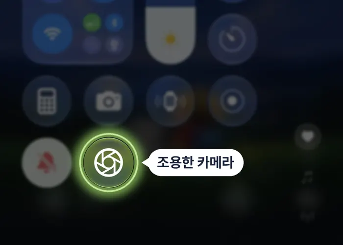
제어 센터에서 바로 실행.Launch straight from Control Center.
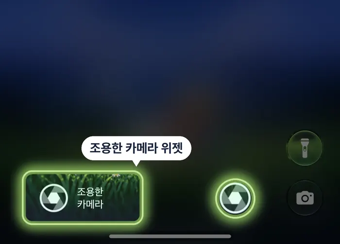
잠금을 풀지 않고 바로 촬영.Open the camera right from your Lock Screen.
조용한 카메라 사용 중 궁금한 점이나 불편한 점이 있으면 메일로 알려 주세요.Questions or feedback about Timer Camera? Send us an email.